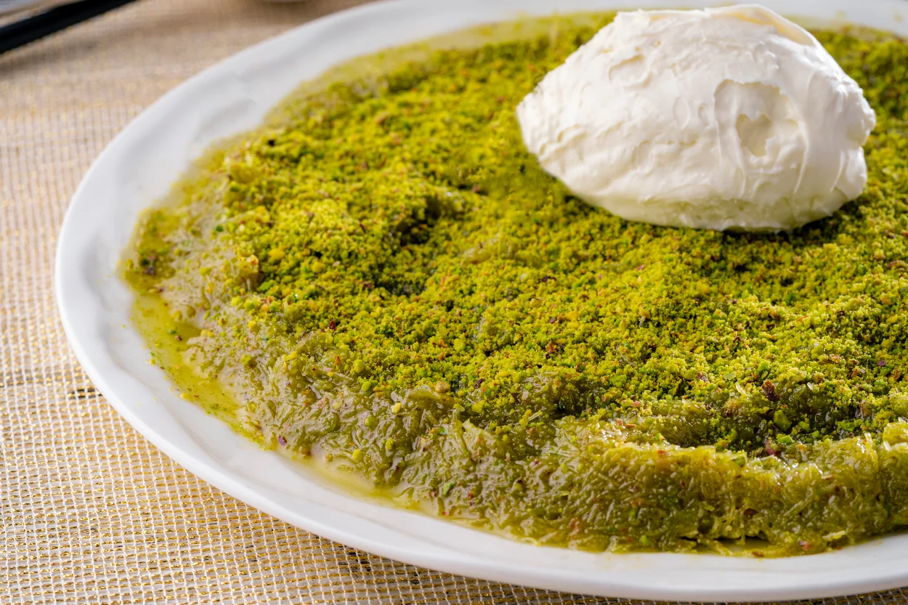

Enfes Cennet Çamuru
Cennetten!
Cennet Çamuru, Kadayıf'a en çok yakışan tarif!
- Malzemeler -
- 60 gram tereyağ
- 2 yemek kaşığı sıvı yağ
- 125 gram tel kadayıf
- 100 gram antep fıstığı
- 1 su bardağı şeker
- 1 su bardağı su
- 3-4 damla limon suyu
- Nasıl Yapılır? -
- Şerbet için şeker ve suyu tencereye alın.
- Kaynadıktan sonra altını kısıp limon suyunu ekleyin 7-8 dk sonra kapatın.
- Tereyağ ve sıvı yağı tencereye alın.
- Eriyince minik minik doğranmış kadayıfları ekleyin sürekli karıştırarak renk alana kadar kavurun.
- Sonra fıstıkları ekleyip iyice birbirine yedirip altını kapatın.
- Soğumuş şerbeti azar azar ekleyin çamur kıvamına gelince birkaç dakika dinlendirip servis edebilirsiniz. Kaymak veya dondurmayla çok iyi gidiyor.